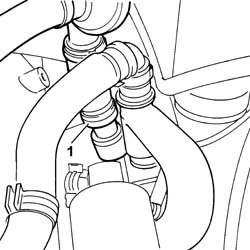
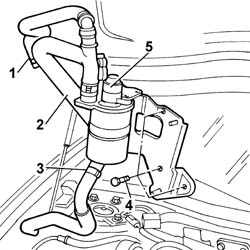

1080D34 Engine oil vapour SEPARATOR - R.R.
- Path
- Procedures > 10 ENGINE > 1080 EMISSION CONTROL SYSTEM > 1080D CRANKCASE VAPOUR/GAS RECIRCULATION SYSTEM > 1080D34 Engine oil vapour SEPARATOR - R.R.
- Kind
- repair procedure (removal / refitting; the operation number is the code)
- Applies to
- engines: 2.4 JTD 20V; all production periods
- Interactive page
- https://sloeber94.github.io/elrnDB-lThss/en/#/850839
Applies to: engines: 2.4 JTD 20V; all production periods
 Removing
Removing
 Refitting
Refitting- Position the vehicle on a lift.
See in Op. 7040D50 ENGINE COMPARTMENT UPPER SOUND INSULATION SHIELD - R.R.
See in Op. 1016A10 SOUND-PROOFING COVER - R.R.
See in Op. 1060F50 FUEL RETURN MANIFOLD PIPE - R and R
See in Op. 1060G70 VACUUM RESERVOIR - R.R.
1. Disconnect the engine oil vapour recovery pipe from the separator.

Applies to: engines: 2.4 JTD 20V; all production periods
1. Disconnect the engine oil vapour recovery pipe from the engine oil filler fitting.
2. Disconnect the engine oil vapour recovery pipe from the engine block.
3. Disconnect the sump oil vapour return pipe from the oil vapour separator.
4. Undo the bolts securing the separator bracket and vacuum reservoir.
5. Remove the engine oil vapour separator and bracket assembly.
- Separate the oil vapour separator from the bracket at the bench.

Applies to: engines: 2.4 JTD 20V; all production periods
Refitting
Removing- Fit the oil vapour separator to the bracket at the bench.
- Fit the engine oil vapour separator and bracket assembly.
- Tighten the bolts securing the separator bracket and vacuum reservoir to the intake manifold and cylinder head.
- Connect the sump oil vapour return pipe to the oil vapour separator.
- Connect the engine oil vapour recovery pipe to the engine block.
- Connect the engine oil vapour recovery pipe to the engine oil filler fitting.
- Connect the separator engine oil vapour pipe from the intake to the separator.
See in Op. 1060G70 VACUUM RESERVOIR - R.R.
See in Op. 1060F50 FUEL RETURN MANIFOLD PIPE - R and R
See in Op. 1016A10 SOUND-PROOFING COVER - R.R.
See in Op. 7040D50 ENGINE COMPARTMENT UPPER SOUND INSULATION SHIELD - R.R.
- Remove the vehicle from the lift.